Dilder¶
A real-time build journal for an open-source AI-assisted virtual pet.
Dilder is a Tamagotchi-style device built on a Raspberry Pi Pico W, a Waveshare 2.13" e-ink display, and a 3D-printed case — developed entirely in the open, one phase at a time.
The Origin Story — How Jamal Was Found¶

It started with a trip to TEDi — a German dollar store where the shelves are chaos and the deals are questionable. My wife Emma and I were browsing the bins, not looking for anything in particular, when we spotted him: a massive plush octopus, soft as a cloud, grinning up at us from a pile of discount stuffed animals like he'd been waiting.
We bought him. Obviously.
On the walk home, something happened. We started talking to him. Then about him — as if he had opinions, preferences, a whole inner life. By the time we got back to the apartment, he had a name: Jamal. He had a personality: laid-back but opinionated, a little sassy, suspiciously wise for a creature with no skeleton. He claimed the armchair immediately. He looked... comfortable. Too comfortable. Like he'd always lived there and we were the guests.
And then the question asked itself:
What if we could actually bring him to life?
Not literally — we're not mad scientists (yet). But what if we could build a tiny digital version of Jamal? A pocket-sized octopus with moods, opinions, and an attitude problem? Something that lives on a screen, reacts to the world, and roasts you when you forget to feed it?
That's how Dilder was born. Not from a grand engineering vision or a product roadmap — from a plush octopus in a discount bin and two people who couldn't stop giving him a backstory on the walk home.
Jamal still sits in the armchair. He still wears the hat. He watches us build his digital self from across the room, and honestly? He looks unimpressed. Which tracks.
The Current Build — Mk2 Translucent Prototype¶
The latest revision: printed in natural/clear PETG so every internal component is visible through the case walls. Running the Conspiratorial Octopus personality on battery power.
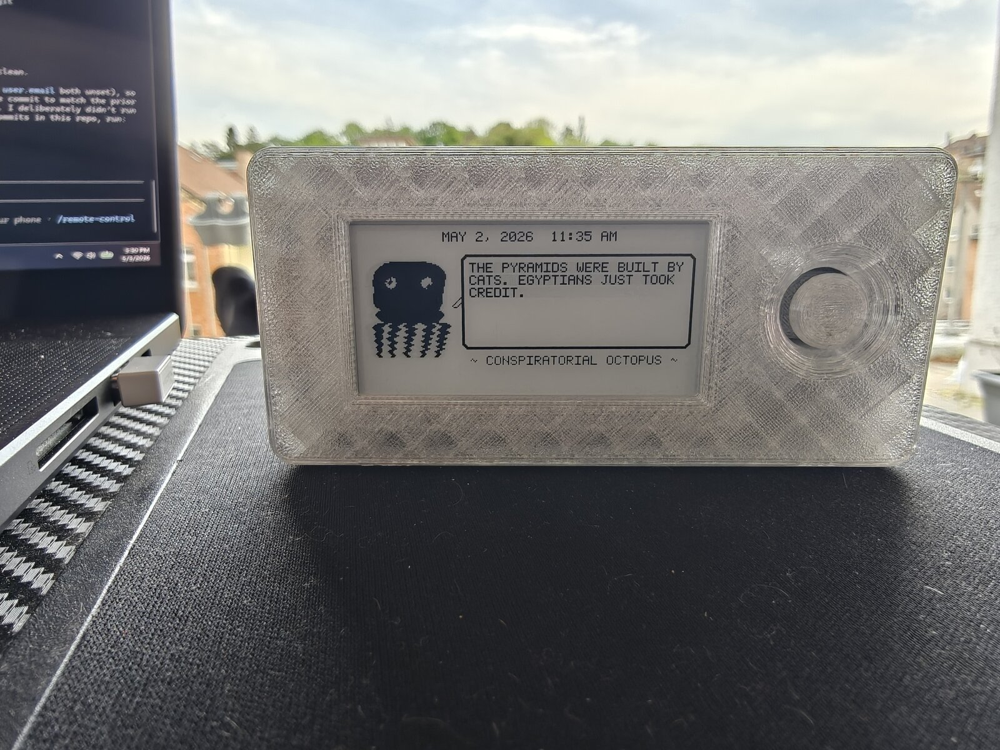
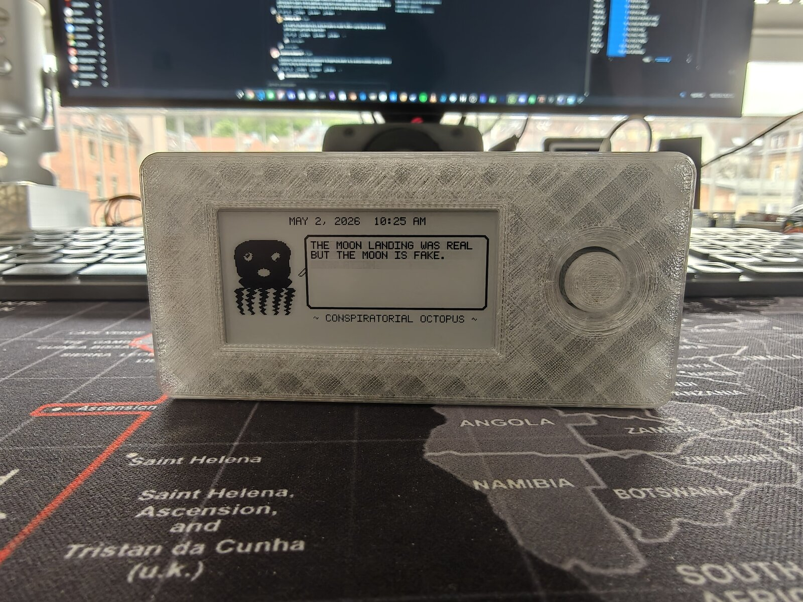
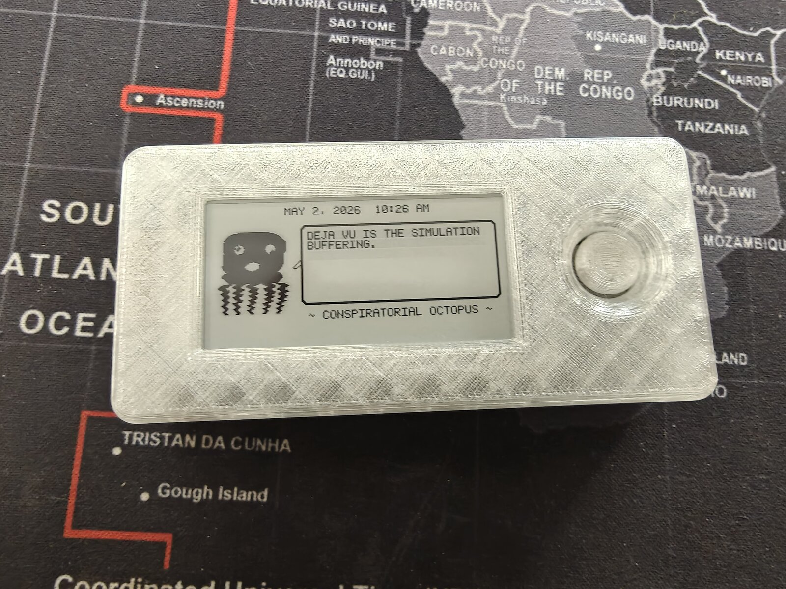
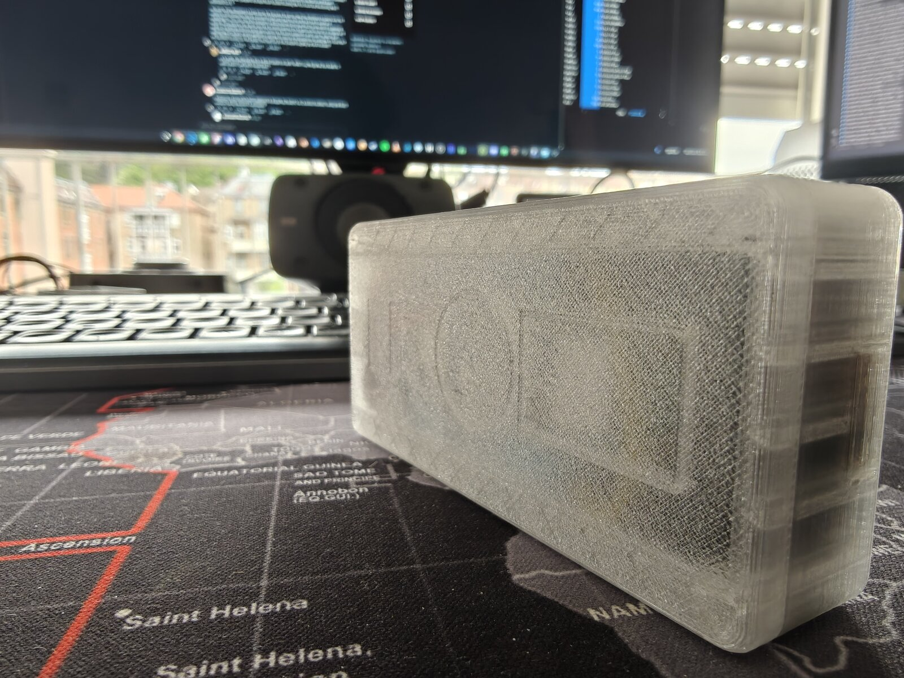
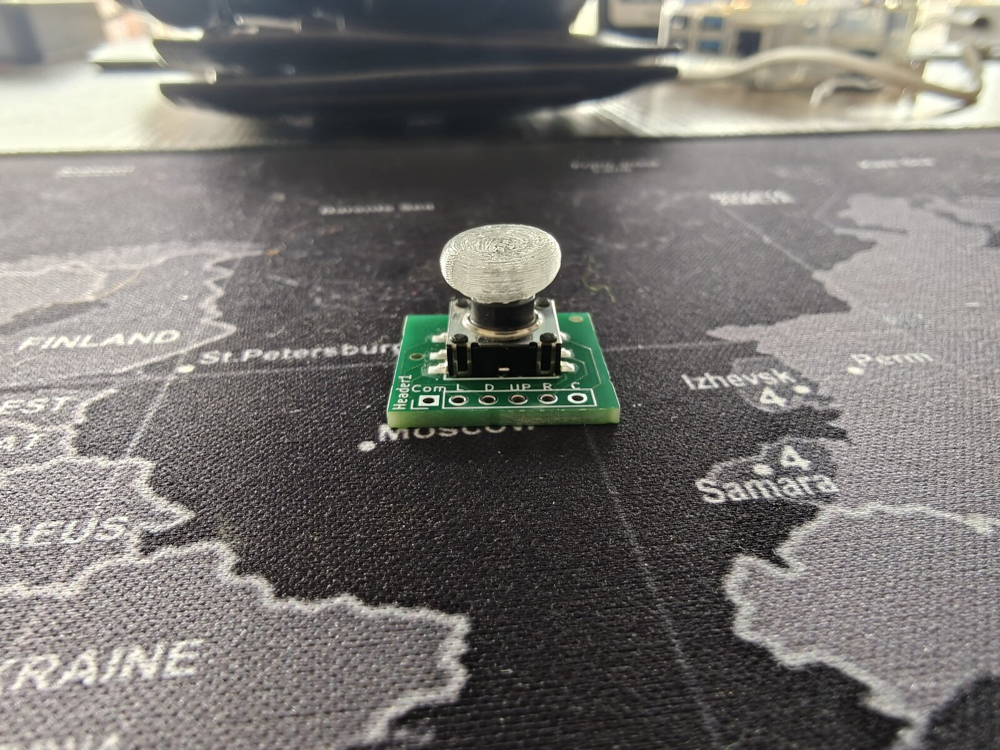
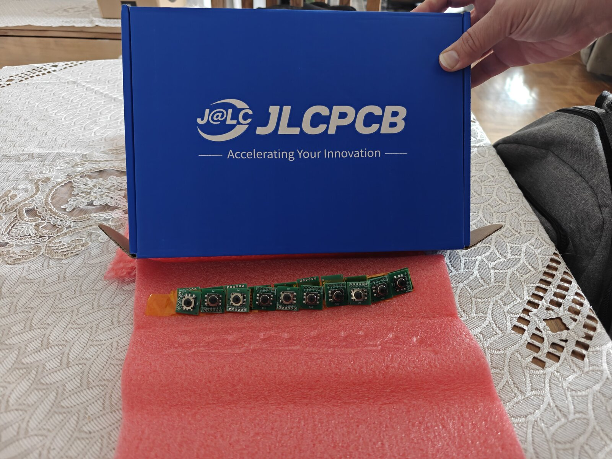
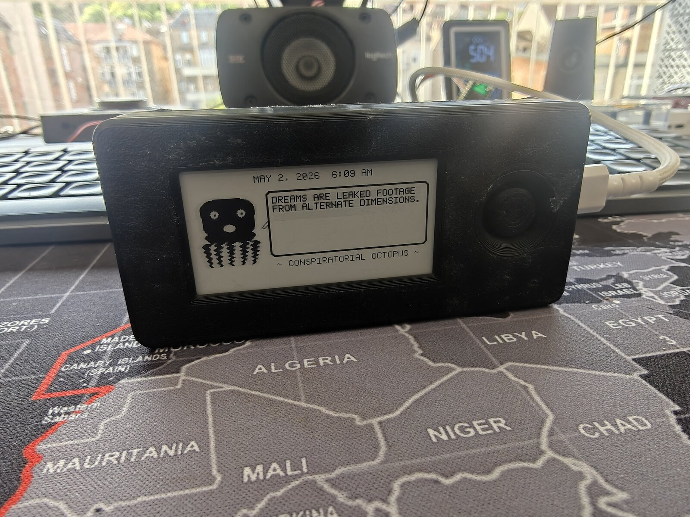
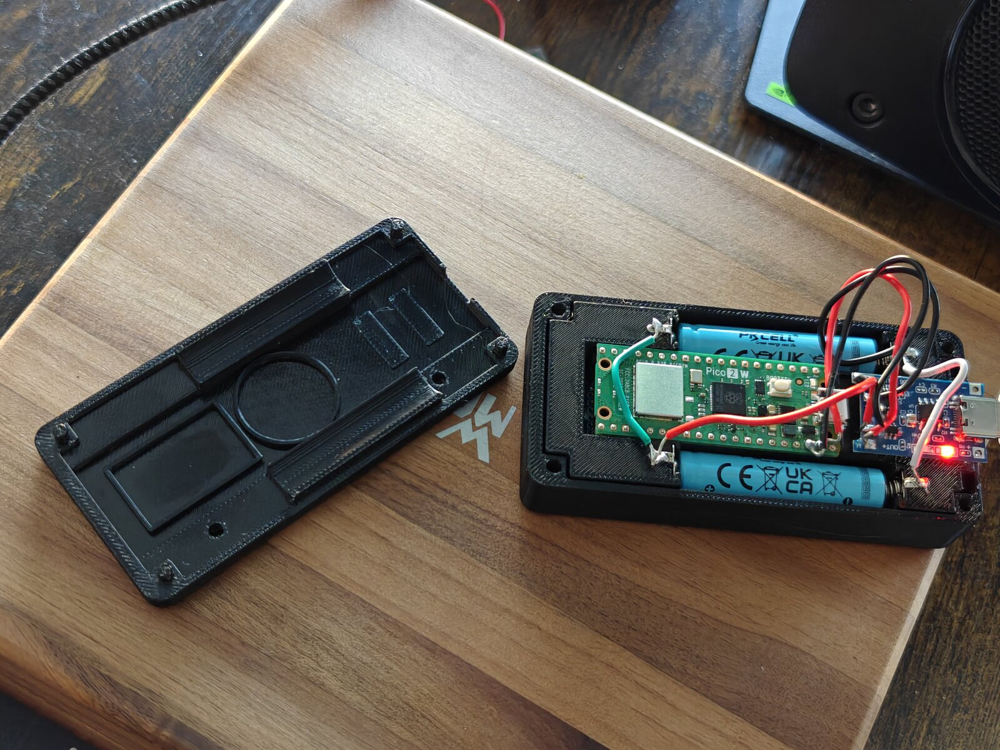
View the design evolution timeline
Latest Prototype — Sensors, Speaker, and Joystick Anchor¶
The parametric FreeCAD macro gained three new systems: a 20 mm piezo speaker in a circular retaining ring, an MPU-6500 6-axis accelerometer in a recessed pocket, and a precision joystick anchor pad that replaces the old well/sleeve design. The joystick PCB alignment was fixed (stick now dead-center in the hole), and the cradle pit tightened from 23 mm to 20 mm for a snug board fit.

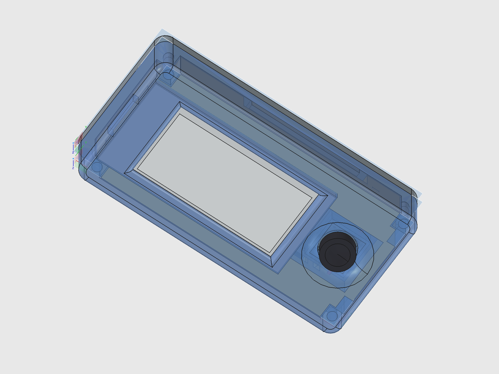


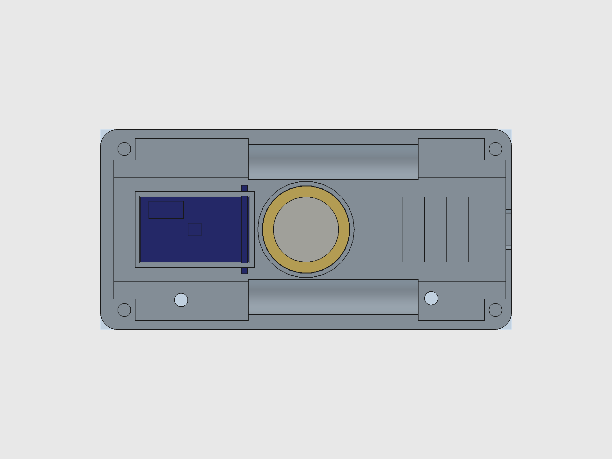
View the complete design breakdown
Dilder Encounters, Riddle Hunts & Collectibles¶
The Dilder isn't just a desk pet — it's a device that comes alive when it meets other Dilders in the real world.
Proximity Encounters¶
Every Dilder broadcasts a BLE beacon. When two devices come within range (~10-30m), both react automatically — a unique 3-note chime plays through the piezo speaker, the e-ink display shows the other pet's name and personality, and both players earn XP and collectibles. No buttons to press. The chime is generated from the device's unique ID, so every Dilder sounds different — and you play the other one's chime, not your own.
Riddle Hunts — Geocaching with Physical Prizes¶
The device presents riddles hinting at real-world locations where physical electronic prizes are hidden in waterproof capsules:
"Where iron horses once drank and the clock tower still watches, look beneath the bench that faces west."
Find the capsule, tap the NFC tag against your Dilder, and collect both a digital unlock (cosmetics, sounds, lore fragments) and a physical electronic component — anything from an LED pack to a full sensor breakout board. Legendary capsules might contain an actual Pico W or a pre-assembled Dilder unit.
Community members become Cache Keepers — writing their own riddles, hiding capsules, and maintaining caches worldwide.
The Network Effect¶
More Dilders = more encounters = more fun. The chime creates curiosity in public. Bystanders ask what the device is. Every encounter is a natural demonstration — and the device is free to build from GitHub or available as a kit on Patreon.
Meet the Octopus¶
A tiny octopus lives on a 250x122 pixel e-ink display. It has 16 emotional states, each with unique eyes, mouth expressions, body animations, and themed quotes. It's sassy. It's opinionated. It runs on 100KB of firmware and a coin cell's worth of ambition.
Pick a personality, flash it to the board, and you've got a desk companion that judges your life choices in ALL CAPS.
The Hardware¶
Three supported boards. Same firmware. Under $25 to get started.
| Component | Price | Why |
|---|---|---|
| Raspberry Pi Pico 2 W | ~$7 | 4MB flash, WiFi + BLE, RP2350 dual Cortex-M33, current default |
| Raspberry Pi Pico W | ~$6 | 2MB flash, WiFi + BLE, RP2040, original dev board |
| Waveshare 2.13" e-Paper V3 | ~$15 | 250x122px, paper-like readability, near-zero standby current |
| 3D-printed enclosure | ~$2 filament | Two-piece snap-fit case, SCAD source files included |
16 Emotions, One Octopus¶
Every mood changes the face, the body, and the attitude.


Normal. Angry. Sad. Excited. Lazy (tentacles draped to the right, naturally). Fat (thicc dome, no waist, proud of it). Plus Weird, Unhinged, Chaotic, Hungry, Tired, Slap Happy, Chill, Creepy, Nostalgic, and Homesick.
Each personality has 30-196 themed quotes, a 4-frame mouth animation cycle, and per-mood body movement — breathing bobs, angry trembles, chaotic distortion, lazy lounging.
The DevTool¶
A custom Tkinter GUI for designing, previewing, and deploying octopus firmware — without touching a terminal.

7 tabs: Display Emulator (pixel art tools) | Serial Monitor | Flash Firmware | Asset Manager | Programs (17 octopus personalities) | GPIO Pin Reference | Connection Utility
Select a program and you get a live preview, estimated firmware size (~100KB), how much of the Pico's 2MB flash you'll use (~5%), and one-click deploy.
First PCB from Scratch — Joystick Breakout Board¶
Before the Dilder, the closest I'd come to PCB design was staring at someone else's Gerber files and thinking "that looks complicated." This board changed that.
The joystick needed a breakout board — the K1-1506SN-01 5-way switch is a tiny surface-mount component with six pins spaced 1.27 mm apart. You can't hand-solder wires to that. So instead of buying a pre-made breakout (they don't exist for this switch), I designed one from scratch in KiCad 10.
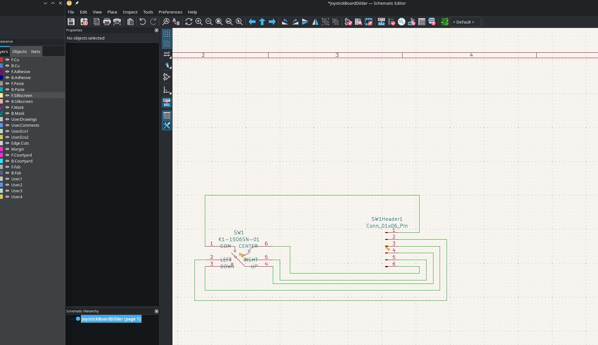
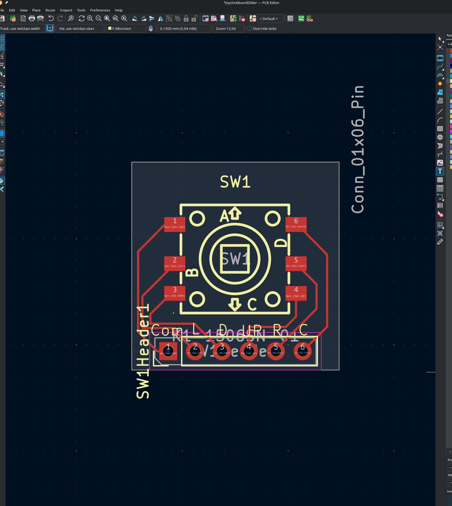
What's on the board¶
The switch sits in the center. Six pads radiate out to header holes along one edge — 2.54 mm pitch so you can solder standard pin headers and plug it straight into a breadboard or the Dilder's cradle pit. The whole thing is smaller than a postage stamp.
The routing was the fun part. KiCad shows you the "ratsnest" — a web of thin lines showing which pads need to connect — and you trace actual copper paths between them. It's like a puzzle where the pieces are wires and the constraint is "don't let them cross." Six signals on a single-layer board means some creative curving, but the K1-1506SN-01 has a clean enough pinout that everything routes without vias.
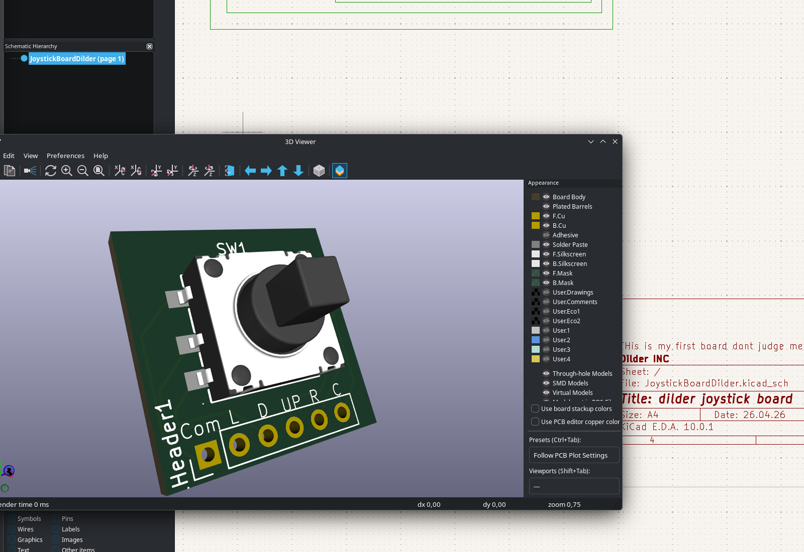
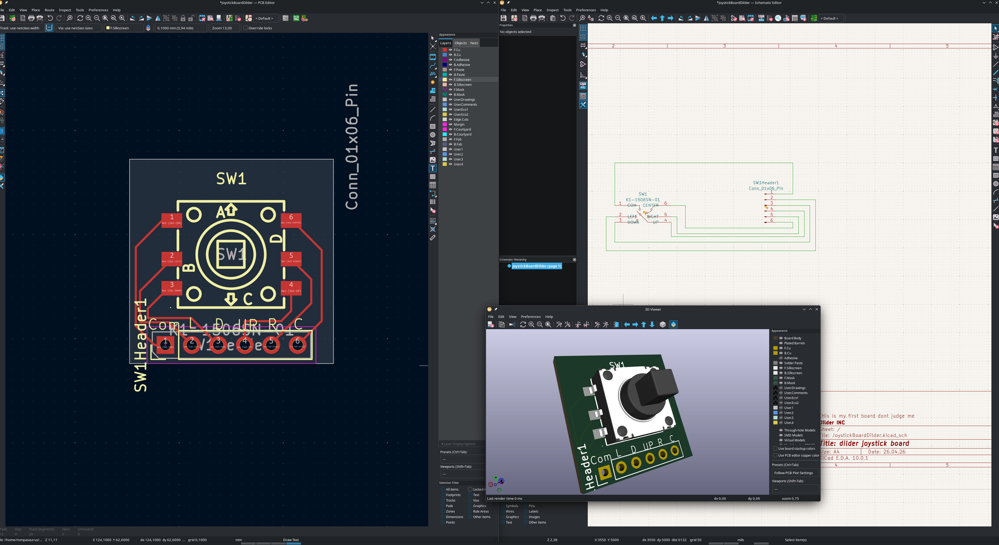
From screen to factory¶
The board went from KiCad to JLCPCB-ready in one session. Gerbers exported, BOM generated, pick-and-place file formatted. Five boards for a few dollars, shipped from Shenzhen. The switch gets placed by machine — I just solder the header pins when they arrive.
The STEP model of the finished board is imported directly into the FreeCAD assembly, where it sits in the cradle's 20 x 20 mm joystick pit with the switch body poking up through the cover's anchor pad into the thumbpiece.

Current Phase¶
Phase 2 — Firmware Foundation (C on Pico W)
Phase 1 (hardware + tooling) is complete. The unit is fully soldered and battery-powered — running off a 10440 Li-ion cell with USB-C charging via TP4056 confirmed working. Two enclosure variants available: Solar (with AK 62x36mm panel) and NoSolar (slimmer, USB-only).
Done: Runtime rendering engine | 16 emotions | Body animations | Custom fat/lazy bodies | 823 quotes | C-faithful preview renderer | DevTool with firmware size estimation | GPIO joystick input | On-screen input indicator | Soldered unit | Battery power | USB-C charging | NoSolar variant | Mk2 translucent case | Joystick PCB from JLCPCB | V4 display driver (two-pass partial refresh) | Firmware version system (v0.5.4) | KiCad pin swap fix
In Progress: V4 partial refresh tuning (blacks slightly washed vs V3). Custom PCB design — ESP32-S3-WROOM-1-N16R8 (WiFi+BLE, 16MB flash, 8MB PSRAM), 4-layer board in KiCad. Full Board all-in-one PCB design.
Next: Swap COM/UP wires and test all 5 joystick directions | Wire up piezo speaker | Implement menu system | Order corrected Rev 2 joystick PCB | Battery life benchmarks
Quick Links¶
-
Docs
Hardware specs, wiring diagrams, setup guides, and code reference.
-
Blog
Build journal posts — from planning to a soldered, battery-powered unit.
-
Discord
Join the community server to ask questions and share your own build.
-
Dev Tools
DevTool GUI, setup CLI, and website dev CLI — built to support the workflow.
-
Patreon
Support the project and get early access to content and files.
-
Source
All firmware, tools, and docs. 270+ AI prompts logged.
How This Project Works¶
The entire development process is public:
- Every prompt submitted to the AI assistant is logged in the Prompt Log — 270+ and counting
- Every hardware decision is documented in the Docs
- Every build step is written up in the Blog
- Every drawing function is verified pixel-by-pixel between C firmware and Python DevTool
- All source files are on GitHub
This is learn-in-public taken to its logical extreme. No hidden steps, no "just trust me" — if it happened, it's documented.